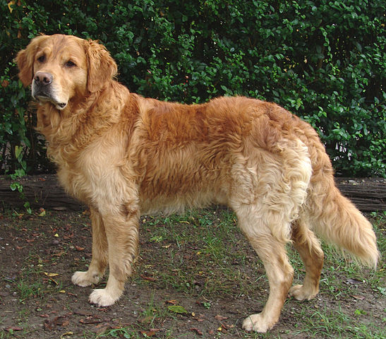

Links are created with the anchor tag, "a" + a hyperlink reference in the opening ta.
There are two kinds of links, relative links and absolute links. Relative links link to pages within the same site/domain, whereas asbolute links link to a page located on a different domain, and includes protocol://domain. An example of an absolute link would be https://www.youtube.com/
Relative links do not contain the domain/protocol since they are located in the same directory, and only require the foldername it is located in or its name if located in the same folder. Relative link to first html page.
In order to add images, the tag img is used, followed by the source of the image in the opening tag, img src=./images/linktoimage would be the proper way of doing so. Alt text should also be used, in the case that an image is unable to be loaded. Alt text should be a description of the image as it can also be used by screen readers/accessibility. For example, alt text for a golden retriever dog would be "A golden retriever".
